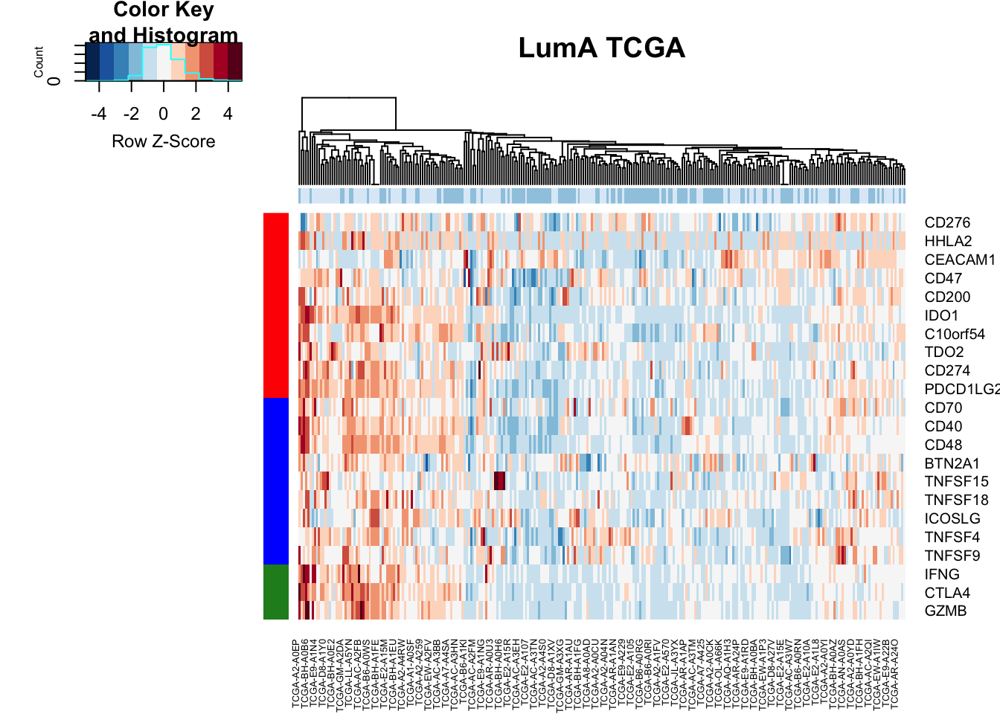

Chapter 15 Associate Epcam+ inflammatory with survival
Associate the signature with outcome in TCGA: Load in TCGA right now
TCGArsem=read.delim("../data/TCGA/BRCA.rnaseqv2__illuminahiseq_rnaseqv2__unc_edu__Level_3__RSEM_genes_normalized__data.data.txt", sep="\t")
rownames(TCGArsem)=TCGArsem[ ,1]
TCGArsem=TCGArsem[, grep("01A", colnames(TCGArsem))]
colnames(TCGArsem)=substr(colnames(TCGArsem), 1, 12)
colnames(TCGArsem)=gsub("\\.", "-", colnames(TCGArsem))
TCGArsem=TCGArsem[-1, ]
TCGArsem2=apply(TCGArsem, 2, as.numeric)
#TCGArsem2=t(TCGArsem2)
#colnames(TCGArsem2)=colnames(TCGArsem)
#TCGArsem2=data.frame(TCGArsem2)
rownames(TCGArsem2)=rownames(TCGArsem)
rownames(TCGArsem2)=sapply(strsplit(rownames(TCGArsem2), "\\|"), function(x) x[1])
TCGArsem2=TCGArsem2[-which(rownames(TCGArsem2)=="?"), ]
load("../data/TCGA/BrClin_clinical_Nov2017.RData")
ax1=match(BrClin$Patient.ID, colnames(TCGArsem))
BrClin=BrClin[-which(is.na(ax1)), ]
TCGArsem=TCGArsem[ , na.omit(ax1)]
## load in the inflammation subtype information
ThorssData=read.xlsx("../data/TCGA/Thorsson2018_table1.xlsx",1)Edit the clinical data to make sure data is censored at 60 months (5 years) and that stage is given an integer value (no 2A, 2b etc.) for easier comparisons
#m1=match(colnames(TCGAssgsea), BrClin$Patient.ID)
BrClin$Stage=(substr(BrClin$American.Joint.Committee.on.Cancer.Tumor.Stage.Code, 2, 2))
BrClin$Stage[which(BrClin$Stage==""|BrClin$Stage=="X")]=NA
BrClin$Overall.Survival..Months.[which(BrClin$Overall.Survival..Months.>=60)]=60
BrClin$Overall.Survival.Status[which(BrClin$Overall.Survival..Months.>=60)]="LIVING"
BrClin$Disease.Free..Months.[which(BrClin$Disease.Free..Months.>=60)]=60
BrClin$Disease.Free.Status[which(BrClin$Disease.Free..Months.>=60)]="Disease Free"## Load the old file
Nickold=read.csv("outputs/EpCAM_IFNg_low_growing_vs_stable.filtered.csv", row.names = 1)
GlistGrowing=rownames(Nickold)[which(sign(Nickold$log2FoldChange)<0 & Nickold$baseMean>100)]
Glistnon=rownames(Nickold)[which(sign(Nickold$log2FoldChange)>0 & Nickold$baseMean>100)]
#alist=results(vstLumRes)15.1 Associating CD74 with phenotype and outcome
The Thorsson data has pre-calculated scores for:
- immune subtypes
- leukocyte fractins
- proportion of data with coding mutations
- TCR shannon index
Z-Scale CD74 scores prior to analysis:
TCGAssgsea=scale(TCGArsem2[match("CD74", rownames(TCGArsem2)), ])
m1=match(colnames(TCGArsem2), BrClin$Patient.ID)
tinfo=data.frame(pam=BrClin$PAM50[m1], OSM=BrClin$Overall.Survival..Months.[m1],
OSS=BrClin$Overall.Survival.Status[m1], cd74=TCGAssgsea,
DFS=BrClin$Disease.Free.Status[m1],
DFM=BrClin$Disease.Free..Months.[m1],
Stage=BrClin$Stage[m1])
ThorssData=ThorssData[which(ThorssData$TCGA.Study=="BRCA"), ]
n1=match(rownames(tinfo), ThorssData$TCGA.Participant.Barcode)
tinfo$immSub=ThorssData$Immune.Subtype[n1]
tinfo$leukFrac=as.numeric(ThorssData$Leukocyte.Fraction[n1])
tinfo$codingMut=as.numeric(ThorssData$Nonsilent.Mutation.Rate[n1])
tinfo$TCRshann=as.numeric(ThorssData$TCR.Shannon[n1])
#pdf("figure-outputs/Figure5_CD74_output.pdf", height=7, width=9)
par(mfrow=c(2,3))
boxplot(tinfo$cd74~tinfo$pam, ylab="gene exp", main="PAM50")
boxplot(tinfo$cd74~tinfo$immSub, ylab="gene exp", main="Immune sbtype")
ax=cor.test(tinfo$cd74, log10(tinfo$codingMut+1), method="pearson")
smoothScatter(tinfo$cd74, log10(tinfo$codingMut+1), xlab="gene exp", ylab="log10 mut")
text(4,0.5, sprintf("cor=%s, p=%s", round(ax$estimate, 2), round(ax$p.value, 2)))
ax=cor.test(tinfo$cd74, tinfo$leukFrac, method="pearson")
smoothScatter(tinfo$cd74, (tinfo$leukFrac), xlab="gene exp", ylab="leuk frac")
text(4,0.2, sprintf("cor=%s, p=%s", round(ax$estimate, 2), round(ax$p.value, 2)))
ax=cor.test(tinfo$cd74, tinfo$TCRshann, method="pearson")
smoothScatter(tinfo$cd74, tinfo$TCRshann, xlab="gene exp", ylab="TCR diversity")
text(4,1, sprintf("cor=%s, p=%s", round(ax$estimate, 2), round(ax$p.value, 2)))
hist(tinfo$cd74)
Figure 15.1: CD74 assoc with patient data
We can also check if there is an association with survival:
axD=Surv(tinfo$DFM, ifelse(tinfo$DFS=="Recurred/Progressed", 1, ifelse(tinfo$DFS=="DiseaseFree", 0, NA)))
axO=Surv(tinfo$OSM, ifelse(tinfo$OSS=="DECEASED", 1, ifelse(tinfo$OSS=="LIVING", 0, NA)))
SurvOSS=coxph(axO~tinfo$pam+tinfo$Stage+tinfo$cd74)
SurvDFS=coxph(axD~tinfo$pam+tinfo$Stage+tinfo$cd74)
ao=summary(SurvOSS)
ao
## Call:
## coxph(formula = axO ~ tinfo$pam + tinfo$Stage + tinfo$cd74)
##
## n= 804, number of events= 78
## (276 observations deleted due to missingness)
##
## coef exp(coef) se(coef) z Pr(>|z|)
## tinfo$pamHer2 0.3709 1.4491 0.3780 0.981 0.3265
## tinfo$pamLumA -0.8365 0.4332 0.3091 -2.707 0.0068 **
## tinfo$pamLumB -0.3137 0.7308 0.3409 -0.920 0.3574
## tinfo$pamNormal -0.2546 0.7752 0.6282 -0.405 0.6853
## tinfo$Stage2 0.6162 1.8519 0.3309 1.862 0.0626 .
## tinfo$Stage3 0.6636 1.9417 0.4315 1.538 0.1241
## tinfo$Stage4 1.9960 7.3594 0.4255 4.691 2.72e-06 ***
## tinfo$cd74 -0.3021 0.7392 0.1530 -1.974 0.0484 *
## ---
## Signif. codes: 0 '***' 0.001 '**' 0.01 '*' 0.05 '.' 0.1 ' ' 1
##
## exp(coef) exp(-coef) lower .95 upper .95
## tinfo$pamHer2 1.4491 0.6901 0.6907 3.0400
## tinfo$pamLumA 0.4332 2.3083 0.2364 0.7939
## tinfo$pamLumB 0.7308 1.3685 0.3747 1.4253
## tinfo$pamNormal 0.7752 1.2899 0.2263 2.6557
## tinfo$Stage2 1.8519 0.5400 0.9681 3.5425
## tinfo$Stage3 1.9417 0.5150 0.8335 4.5234
## tinfo$Stage4 7.3594 0.1359 3.1963 16.9448
## tinfo$cd74 0.7392 1.3528 0.5477 0.9978
##
## Concordance= 0.715 (se = 0.031 )
## Likelihood ratio test= 42.32 on 8 df, p=1e-06
## Wald test = 47.41 on 8 df, p=1e-07
## Score (logrank) test = 56.19 on 8 df, p=3e-09
as=summary(SurvDFS)
as
## Call:
## coxph(formula = axD ~ tinfo$pam + tinfo$Stage + tinfo$cd74)
##
## n= 587, number of events= 69
## (493 observations deleted due to missingness)
##
## coef exp(coef) se(coef) z Pr(>|z|)
## tinfo$pamHer2 -0.4626 0.6296 0.4860 -0.952 0.34117
## tinfo$pamLumA -1.0004 0.3677 0.3158 -3.168 0.00153 **
## tinfo$pamLumB -0.8377 0.4327 0.3701 -2.263 0.02361 *
## tinfo$pamNormal -0.8810 0.4143 0.7608 -1.158 0.24681
## tinfo$Stage2 0.5470 1.7281 0.3389 1.614 0.10648
## tinfo$Stage3 1.0539 2.8687 0.4440 2.373 0.01762 *
## tinfo$Stage4 2.6058 13.5422 0.4836 5.388 7.13e-08 ***
## tinfo$cd74 -0.1134 0.8928 0.1456 -0.779 0.43600
## ---
## Signif. codes: 0 '***' 0.001 '**' 0.01 '*' 0.05 '.' 0.1 ' ' 1
##
## exp(coef) exp(-coef) lower .95 upper .95
## tinfo$pamHer2 0.6296 1.58824 0.24287 1.6323
## tinfo$pamLumA 0.3677 2.71950 0.19802 0.6828
## tinfo$pamLumB 0.4327 2.31113 0.20948 0.8937
## tinfo$pamNormal 0.4143 2.41342 0.09329 1.8404
## tinfo$Stage2 1.7281 0.57866 0.88943 3.3577
## tinfo$Stage3 2.8687 0.34859 1.20151 6.8493
## tinfo$Stage4 13.5422 0.07384 5.24827 34.9432
## tinfo$cd74 0.8928 1.12006 0.67121 1.1876
##
## Concordance= 0.69 (se = 0.039 )
## Likelihood ratio test= 32.15 on 8 df, p=9e-05
## Wald test = 39.03 on 8 df, p=5e-06
## Score (logrank) test = 50.73 on 8 df, p=3e-08Note that CD74 is associated with survival: The harzards ratio is 1.851886 (95CI:0.9680967, 3.5424989), p value 1.176905110^{-6}.
This means that this is associated with survival regardless of subtype. We can look at these values in forestplots
data1=data.frame(X1=c("","PAM50", "", "", "", "", "Stage", "","","", "CD74"),
X2=c("","Basal", "Her2", "LumA", "LumB", "Normal" ,"1", "2", "3", "4", ""),
X3=c("NSamp", table(tinfo$pam), table(tinfo$Stage), length(na.omit(tinfo$cd74))),
X4=c("HR", "", round(summary(SurvOSS)$coefficients[ 1:4,2],2), "",
round(summary(SurvOSS)$coefficients[ 5:8,2],2)))
mdata=data.frame(summary(SurvOSS)$conf.int[ ,c(1,3:4)])
mdata=rbind(NA,NA, mdata[1:4, ], NA, mdata[5:8, ])
#pdf("figure-outputs/Figure5_CD74_forestplot.pdf", width=5, height=5)
forestplot(data1, mdata, xlog=T,
boxsize=0.5)
Figure 15.2: forest plot CD74
We can look below what the association with subtype is in KM curves:
par(mfrow=c(2,2))
Xind=c("Basal", "Her2", "LumA", "LumB")
for (i in Xind){
l1=which(tinfo$pam==i)
ax=Surv(tinfo$OSM[l1], ifelse(tinfo$OSS[l1]=="DECEASED", 1, ifelse(tinfo$OSS[l1]=="LIVING", 0, NA)))
TCGAvalCut=cut(tinfo$cd74[l1], quantile(tinfo$cd74[l1], c(0, 0.33, 0.67, 1)), c("L","M", "P"))
ax1=summary(coxph(ax~TCGAvalCut+tinfo$Stage[l1]))
ax2=plot(survfit(ax~TCGAvalCut), main=paste(i, "CD74 gene exp"), col=brewer.pal(3, "Blues"),lwd=2, xlab="Time (months)", ylab="OS", mark.time=T)
text(20, 0.2, sprintf("HR:%s (%s-%s) p=%s", round(ax1$coefficients[2,2 ],2),
round(ax1$conf.int[2,3 ],2), round(ax1$conf.int[2, 4],2),round(ax1$logtest[3],2)))
}
Figure 15.3: OS CD74 by subtype
par(mfrow=c(2,2))
for (i in Xind){
l1=which(tinfo$pam==i)
ax=Surv(tinfo$DFM[l1], ifelse(tinfo$DFS[l1]=="Recurred/Progressed", 1, ifelse(tinfo$DFS[l1]=="DiseaseFree", 0, NA)))
TCGAvalCut=cut(tinfo$cd74[l1], quantile(tinfo$cd74[l1], c(0, 0.33, 0.67, 1)), c("L","M", "P"))
ax1=summary(coxph(ax~TCGAvalCut+tinfo$Stage[l1]))
ax2=plot(survfit(ax~TCGAvalCut), main=paste(i, "CD74 gene exp"), col=brewer.pal(3, "Blues"),lwd=2, xlab="Time (months)", ylab="DFS", mark.time=T)
text(20, 0.2, sprintf("HR:%s (%s-%s) p=%s", round(ax1$coefficients[2,2 ],2),
round(ax1$conf.int[2,3 ],2), round(ax1$conf.int[2, 4],2),round(ax1$logtest[3],2)))
}
Figure 15.4: DFS CD74 by subtype
15.2 Signature: Lum cases non-inflammatory: growing vs stable
Here, use the signature which was applied before to see the difference between the non-inflammatory growing vs stable samples
GlistGrowing=rownames(vstLumRes)[which(vstLumRes$log2FoldChange>1.5 & vstLumRes$baseMean>100 & vstLumRes$padj<0.05 )]
Glistnon=rownames(vstLumRes)[which(vstLumRes$log2FoldChange<(-1.5) & vstLumRes$baseMean>100 & vstLumRes$padj<0.05 )]
HumGeneList=SymHum2Rat$HGNC.symbol[match(GlistGrowing, SymHum2Rat$RGD.symbol)]
HumGeneList2=Rat2Hum$HGNC.symbol[match(GlistGrowing, Rat2Hum$RGD.symbol)]
TCGAssgsea=gsva((TCGArsem2), list(grow=na.omit(HumGeneList2),
stab=Rat2Hum$HGNC.symbol[match(Glistnon, Rat2Hum$RGD.symbol)]), method="ssgsea", ssgsea.norm=T)
par(mfrow=c(1,2))
hist(TCGAssgsea[1, ], main="stable")
hist(TCGAssgsea[2, ], main="growing")

Below are the survival curves:
#pdf("figure-outputs/Fig5_survival_analysis_Lum_samples_baseMean_greater100.pdf", height=8, width = 8)
par(mfrow=c(2,2))
Xind=c("Basal", "Her2", "LumA", "LumB")
for (i in Xind){
l1=which(BrClin$PAM50==i)
lx2=match(BrClin$Patient.ID[l1], colnames(TCGAssgsea))
ax=Surv(BrClin$Overall.Survival..Months.[l1], ifelse(BrClin$Overall.Survival.Status[l1]=="DECEASED", 1, ifelse(BrClin$Overall.Survival.Status[l1]=="LIVING", 0, NA)))
axb=coxph(ax~TCGAssgsea[1, lx2]+BrClin$Stage[l1])
axc=summary(axb)
TCGAvalCut=cut(TCGAssgsea[1, lx2], quantile(TCGAssgsea[1, lx2], c(0, 0.33, 0.67, 1)), c("L","M", "P"))
ax2=plot(survfit(ax~TCGAvalCut), main=paste(i, "lum stable"), col=brewer.pal(3, "Blues"),lwd=2, xlab="Time (months)", ylab="OS", mark.time=T)
text(10, 0, sprintf("univ. cts. var. HR=%s (%s-%s), p=%s", round(axc$coefficients[1,2], 2),
round(axc$conf.int[1,3],2), round(axc$conf.int[1,4],2),round(axc$logtest[3],2 )))
}
for (i in Xind){
l1=which(BrClin$PAM50==i)
lx2=match(BrClin$Patient.ID[l1], colnames(TCGAssgsea))
ax=Surv(BrClin$Disease.Free..Months.[l1], ifelse(BrClin$Disease.Free.Status[l1]=="Recurred/Progressed", 1, ifelse(BrClin$Disease.Free.Status[l1]=="DiseaseFree", 0, NA)))
axb=coxph(ax~TCGAssgsea[1, lx2]+BrClin$Stage[l1])
axc=summary(axb)
TCGAvalCut=cut(TCGAssgsea[1, lx2], quantile(TCGAssgsea[1, lx2], c(0, 0.33, 0.67, 1)), c("L","M", "P"))
ax2=plot(survfit(ax~TCGAvalCut), main=paste(i, "lum stable"), col=brewer.pal(3, "Blues"),lwd=2, xlab="Time (months)", ylab="DFS", mark.time=T)
text(10, 0, sprintf("univ. cts. var. HR=%s (%s-%s), p=%s", round(axc$coefficients[1,2], 2),
round(axc$conf.int[1,3],2), round(axc$conf.int[1,4],2),round(axc$logtest[3],2 )))
}
Below are firstly the OS curves for the growing signature
par(mfrow=c(2,2))
Xind=c("Basal", "Her2", "LumA", "LumB")
for (i in Xind){
l1=which(BrClin$PAM50==i)
lx2=match(BrClin$Patient.ID[l1], colnames(TCGAssgsea))
ax=Surv(BrClin$Overall.Survival..Months.[l1], ifelse(BrClin$Overall.Survival.Status[l1]=="DECEASED", 1, ifelse(BrClin$Overall.Survival.Status[l1]=="LIVING", 0, NA)))
axb=coxph(ax~TCGAssgsea[2, lx2]+BrClin$Stage[l1])
axc=summary(axb)
TCGAvalCut=cut(TCGAssgsea[2, lx2], quantile(TCGAssgsea[2, lx2], c(0, 0.33, 0.67, 1)), c("L","M", "P"))
ax2=plot(survfit(ax~TCGAvalCut), main=paste(i, "lum growing"), col=brewer.pal(3, "Blues"),lwd=2, xlab="Time", ylab="OS", mark.time=T)
text(10, 0, sprintf("univ. cts. var. HR=%s (%s-%s), p=%s", round(axc$coefficients[1,2], 2),
round(axc$conf.int[1,3],2), round(axc$conf.int[1,4],2),round(axc$logtest[3],2 )))
}Figure 15.5: OS: growing signature
Followed by the DFS plots for this signature
par(mfrow=c(2,2))
for (i in Xind){
l1=which(BrClin$PAM50==i)
lx2=match(BrClin$Patient.ID[l1], colnames(TCGAssgsea))
ax=Surv(BrClin$Disease.Free..Months.[l1], ifelse(BrClin$Disease.Free.Status[l1]=="Recurred/Progressed", 1, ifelse(BrClin$Disease.Free.Status[l1]=="DiseaseFree", 0, NA)))
axb=coxph(ax~TCGAssgsea[2, lx2]+BrClin$Stage[l1])
axc=summary(axb)
TCGAvalCut=cut(TCGAssgsea[2, lx2], quantile(TCGAssgsea[2, lx2], c(0, 0.33, 0.67, 1)), c("L","M", "P"))
ax2=plot(survfit(ax~TCGAvalCut), main=paste(i, "lum growing"), col=brewer.pal(3, "Blues"),lwd=2, xlab="Time (months)", ylab="DFS", mark.time=T)
text(10, 0, sprintf("univ. cts. var. HR=%s (%s-%s), p=%s", round(axc$coefficients[1,2], 2),
round(axc$conf.int[1,3],2), round(axc$conf.int[1,4],2),round(axc$logtest[3],2 )))
}
Figure 15.6: DFS forgrowing signature
The gene lists are
Stable:
Fgfr2, Mx1, Endou, Grhl3, Slpi, Gbp2, Plg, Aldh1a3, Upk3a
Growing:
Setd7, Hspa1l, Hbb, Kifc2, Kmt5c, Pik3c2b, Lmntd2, Nsmf, Nrbp2, LOC100134871, Hsp90aa1, Coro6, Chst8, Slc4a3, Fhod1, Rpl8, Spp1, Catsperg, Col5a1, LOC100911498, Noxa1, F8, Rps19, Rps6, Irs1, Leng8, Plekhh1, Lmbr1l, Ikbke, Pnisr, Adamts10, Zfp692, Trim41, Sema6d, Mgp, Cdc42bpg, Slc16a13, Dmpk
We can see whether this signature associates with leukocyte content and TCR diversity in the TCGA cohort:
l1=which(BrClin$PAM50=="LumA")
lx2=match(BrClin$Patient.ID[l1], colnames(TCGAssgsea))
lx3=match(BrClin$Patient.ID[l1], ThorssData$TCGA.Participant.Barcode)
newinfoTab=data.frame(pat=BrClin$Patient.ID[l1], TCGAval=TCGAssgsea[2, lx2],
leuk=as.numeric(ThorssData$Leukocyte.Fraction[lx3]),
TCRshann=as.numeric(ThorssData$TCR.Shannon[lx3]),
immSub=ThorssData$Immune.Subtype[lx3])
#pdf("figure-outputs/Fig5_assoc_growing_stable_signature.pdf", height=6, width=9)
par(mfrow=c(1,2))
ax=cor.test(newinfoTab$TCGA, newinfoTab$leuk, method="pearson")
smoothScatter(newinfoTab$TCGA, newinfoTab$leuk)
text(0.6,0.6, sprintf("cor=%s, p=%s", round(ax$estimate, 2), round(ax$p.value, 2)))
ax=cor.test(newinfoTab$TCGA, newinfoTab$TCRshann, method="pearson")
smoothScatter(newinfoTab$TCGA, newinfoTab$TCRshann)
text(0.6,5, sprintf("cor=%s, p=%s", round(ax$estimate, 2), round(ax$p.value, 2)))Figure 15.7: luminal signature associated with clinical variables
As well as whether it associates with any of the previously identified immune subtypes:

15.2.1 TCGA: LumA high vs low signatures
We can pull out the samples here which have high vs low signature (in the lumA group) and perform differential gene expression analysis on these cases:
newinfoTab$TCGAvalcut=cut(newinfoTab$TCGAval, quantile(newinfoTab$TCGAval, c(0, 0.33, 0.67, 1) ), c("L", "M", "O"))
colDataTCGA=newinfoTab[which(newinfoTab$TCGAvalcut!="M"), ]
head(colDataTCGA)
## pat TCGAval leuk TCRshann immSub TCGAvalcut
## 1 TCGA-A1-A0SD 0.4276658 0.1307793 2.966943 C2 L
## 2 TCGA-A1-A0SE 0.4281833 0.1157228 3.404928 C1 L
## 3 TCGA-A1-A0SF 0.4348571 0.2502148 4.145625 C1 L
## 4 TCGA-A1-A0SH 0.4311287 0.1707323 2.441015 C6 L
## 5 TCGA-A1-A0SJ 0.4293603 0.1281564 2.978508 C1 L
## 7 TCGA-A1-A0SQ 0.4376568 0.1028228 2.025326 C3 L
TCGAdeseq=DESeqDataSetFromMatrix(round(TCGArsem2[ ,match(colDataTCGA$pat, colnames(TCGArsem2))]), colDataTCGA, design=~TCGAvalcut)
TCGAdeseq=DESeq(TCGAdeseq)
TCGAdeseqRes=results(TCGAdeseq)
write.csv(TCGAdeseqRes, file="nature-tables/5J_TCGA.csv")
TCGAdeseqRes2=TCGAdeseqRes[which(TCGAdeseqRes$padj<0.05 & abs(TCGAdeseqRes$log2FoldChange)>1.5
& TCGAdeseqRes$baseMean>100), ]We can plot the differential genes here in a volcano plot:
pdf("figure-outputs/Fig5J_TCGA_deg.pdf", height=8, width=8)
with(TCGAdeseqRes, plot(log2FoldChange, -log10(padj), pch=20, main="Volcano plot: Low exp (+) vs high (-)", cex=1.0, xlab=bquote(~Log[2]~fold~change), ylab=bquote(~-log[10]~Q~value)))
with(subset(TCGAdeseqRes, padj<0.1 & abs(log2FoldChange)>1.5), points(log2FoldChange, -log10(padj), pch=20, col="red", cex=0.5))
with(subset(TCGAdeseqRes, padj<0.1 & abs(log2FoldChange)>1.5), text(log2FoldChange+0.05, -log10(padj)+0.05, rownames(TCGAdeseqRes2), pch=20, col="red", cex=0.75))
dev.off()
## quartz_off_screen
## 2vstTCGA=vst(assay(TCGAdeseq))
ColSideCols=c("skyblue", "blue")[factor(TCGAdeseq$TCGAvalcut)]
ax1=vstTCGA[ match(rownames(TCGAdeseqRes2), rownames(vstTCGA)), ]
ax1[1:5, 1:5]
## TCGA-A1-A0SD TCGA-A1-A0SE TCGA-A1-A0SF TCGA-A1-A0SH TCGA-A1-A0SJ
## ARHGAP33 7.384462 7.604834 8.112232 6.986648 8.694451
## ATG16L2 8.875778 7.670891 8.619986 7.414996 9.107129
## ATHL1 8.714318 10.375118 8.319105 8.276105 7.447886
## C1orf95 7.008673 6.021883 6.083560 5.901986 9.197793
## CARTPT 8.789410 5.223711 5.223711 5.223711 5.223711
pdf("figure-outputs/Figure5J_XX_heatmap_LumA_TCGA.pdf", height=15, width=10)
heatmap.2(vstTCGA[ rownames(TCGAdeseqRes2), ], scale="row", trace="none", ColSideColors = ColSideCols, col=RdBu[11:1], main="LumA TCGA")
dev.off()
## quartz_off_screen
## 2
boxplot(vstTCGA["CXCL13", ]~TCGAdeseq$TCGAvalcut)
Figure 15.8: because someone will ask for it
Run gsea here
hits=rownames(TCGAdeseqRes2)
fcTab=TCGAdeseqRes$log2FoldChange
names(fcTab)=rownames(TCGAdeseq)
gscaTCGA=GSCA(listOfGeneSetCollections=ListGSC,geneList=fcTab, hits = hits)
gscaTCGA<- preprocess( gscaTCGA, species="Hs", initialIDs="SYMBOL",
keepMultipleMappings=TRUE, duplicateRemoverMethod="max",
orderAbsValue=FALSE)
## -Preprocessing for input gene list and hit list ...
## --Removing genes without values in geneList ...
## --Removing duplicated genes ...
## --Converting annotations ...
## -- 2818 genes (out of 20055) could not be mapped to any identifier, and were removed from the data.
## -- 2 genes (out of 29) could not be mapped to any identifier, and were removed from the data.
## --Ordering Gene List decreasingly ...
## -Preprocessing complete!
gscaTCGA <- analyze( gscaTCGA,
para=list(pValueCutoff=0.05, pAdjustMethod="BH",
nPermutations=100, minGeneSetSize=5,
exponent=1),
doGSOA = F)
## --21 gene sets don't have >= 5 overlapped genes with universe in gene set collection named c2List!
## --257 gene sets don't have >= 5 overlapped genes with universe in gene set collection named c5BP!
## --73 gene sets don't have >= 5 overlapped genes with universe in gene set collection named c5MF!
## --60 gene sets don't have >= 5 overlapped genes with universe in gene set collection named c5CC!
## --301 gene sets don't have >= 5 overlapped genes with universe in gene set collection named MetPathway!
## -Performing gene set enrichment analysis using HTSanalyzeR2...
## --Calculating the permutations ...
## -Gene set enrichment analysis using HTSanalyzeR2 complete
## ==============================================
save( gscaTCGA, file="figure-outputs/TCGA_hairball.RData")
TermsA=sapply(strsplit(rownames(gscaTCGA@result$GSEA.results$ProcessNetworks), "_"), function(x) x[2])
TermsA[which(is.na(TermsA))]=substr(rownames(gscaTCGA@result$GSEA.results$ProcessNetworks)[which(is.na(TermsA))], 2, 50)
## check whether this runs:
gscaTCGA@result$GSEA.results$ProcessNetworks$Gene.Set.Term=TermsA
viewEnrichMap(gscaTCGA, gscs=c("ProcessNetworks"),
allSig = TRUE, gsNameType="term" )Figure 15.9: pointless TCGA hairball